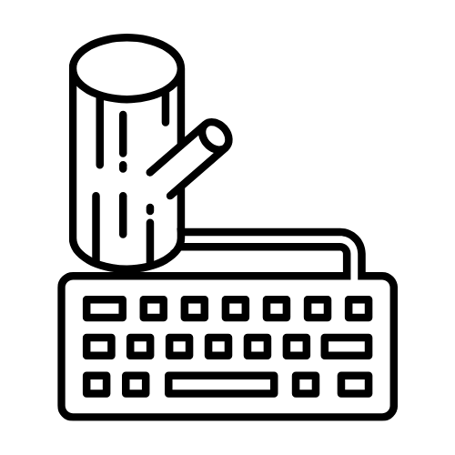

Proyectos.

Scrap Movil
Web scraper creado con Python y Scrapy.
Estado:
En desarrolloTecnologías usadas:


Keylogger sencillo
Keylogger que registra las teclas pulsadas, desarrollado en Python con la biblioteca Pynput.
Este proyecto lo hago con intenciones de entender mejor este tipo de software.
Estado:
En desarrolloTecnologías usadas: